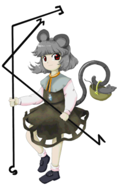
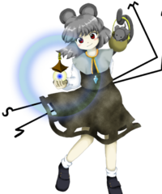

- Welcome to Touhou Wiki!
- Please register to edit. For assistance, check in with our Discord server or IRC channel.
Nazrin
| ナズーリン Nazrin nazɯːɽʲiɴ (♫) Nasrin, Nazrin, Nesrin, Nazu-rin | |
|---|---|
|
Nazrin in Undefined Fantastic Object The Little Dowser GeneralMore Character Titles | |
| Species | |
| Abilities |
Finding sought-for items |
| Age |
At least 1000 years |
| Occupation |
Dowser, said to be a leader of mice |
| Location | |
Music Themes | |
| |
Appearances | |
| Official Games | |
| |
| Print Works | |
| |
Nazrin (ナズーリン Nazūrin) is a mouse youkai who's a skilled dowser and the leader of a great number of mice. As the leader of many mice, she often employs them to search for things for her; though if she were to ask them to find food, it would most likely be gone by the time they returned.
General Information[edit]
Nazrin first appeared as the stage 1 boss of Undefined Fantastic Object and later appeared as the stage 5 midboss. She was a target on Stage 7 in Double Spoiler and made a background appearance in Hopeless Masquerade.
Personality[edit]
Symposium of Post-mysticism describes Nazrin as having a large ego – due to being backed by Bishamonten himself – but that she is also timid, and would run away as soon as she became frightened. She also apparently eats quite a bit, and depending on how many mice are under her command at a given time, can put a serious dent in crop numbers.
Symposium of Post-mysticism also mentions that if one is firm and holds their ground while negotiating with her, they can get her to search for lost objects for them - while on the other hand, asking humbly and politely is likely only to inflate her ego.
Throughout the events of Undefined Fantastic Object she is quite straightforward in speech.
Ability and Possessions[edit]
- Finding sought-for items
As stated, Nazrin's ability is being able to find specific objects that are being looked for by someone. In order to effectively utilize the ability, she must have a clear, concrete image of what she is looking for. She presumably uses a pair of dowsing rods to aid her in this effort, which she uses to find gold and treasure, and also is able to order the mice under her command to assist her. The mouse and the dowsing rods, freely using a pendulum, perform dowsing. It seems like the rod and the pendulum are utilised in battle, and are used as a shield and as a tool for firing danmaku. Furthermore, each end of the dowsing rods appears to have a letter. The left one has N (north) and W (west), while the right one has S (south) and E (east). Nazrin owns a pair of dowsing rods, which she uses to find gold and treasure. She employs the rods in Undefined Fantastic Object to search for the lost pagoda of Bishamonten, as well as the fragments of the Flying Storage.
The origin of this is probably due to a legend where a trial was ordered for Ookuninushi to marry Suserihime. There, a mouse came back with an arrow that Ookuninushi was searching for. However, for the method to be due to dowsing is not quite accurate, and the standard of searching at that time is unclear. Furthermore, as the ability itself is always ancillary, in the end, she searches at her feet. It also seems like for the sought-for food items, they are devoured by the mice before the food can come to hand.
Occupation[edit]
Nazrin acts as Shou Toramaru's faithful helper, but is also the leader of a great deal of ordinary mice. In Symposium of Post-mysticism, she is referred to as Shou's mouse familiar, but in reality she is a high-ranking youkai dispatched by Bishamonten. Because of this, she does not generally reside at the Myouren Temple, and will not visit unless Shou calls upon her.
She currently resides in a small self-built hut in Muenzuka, because of the treasure that floats in from the outside world.
Backstory[edit]
Nazrin is a high-ranking youkai dispatched by the god Bishamonten. She was sent to god's new disciple, Shou Toramaru, to be a helper and also to keep an eye on her.
Character Design[edit]
Name[edit]
Her only known name is Nazrin (ナズーリン), which could be a reference to nezumi (鼠), the Japanese word for "mouse". Her name could also be derived from the Persian name Nasrin (نسرین) with the meaning "wild rose", a widely used name in the Islamic world; various different spellings include Nasrin, Nazrin and Nesrin. There's also "Nasulin" (Насулин), a real Russian surname, and it's also the name of a nasal insulin. In the data files for Hopeless Masquerade, her name was romanised as "nazu-rin".
ZUN states in an interview that it made sense to have a mouse be the envoy of the Bishamonten; in the Chinese zodiac, the mouse represents north, as does Bishamonten.[1]
Design[edit]
Nazrin has gray hair and red eyes. She wears a brownish-black one-piece with pink sleeves and a gray capelet. She also wears a necklace with a crystal pendant. Carries dowsing rods with the letters for the cardinal directions on the ends. She also carries a mouse in a basket by her tail. When she appears as the Stage 5 midboss, she is carrying the jeweled pagoda of Bishamonten.
Story[edit]
Games[edit]
- Undefined Fantastic Object
She was asked by Shou Toramaru to look for the lost pagoda of Bishamonten. On Stage 1 of Undefined Fantastic Object, Nazrin descends from the flying ship after getting a treasure reading. Either by being provoked to or forced to, she attacks the player. After she loses the battle, she manages to flee the scene. Later she does find what she was looking for - the treasured pagoda, the other key to releasing Byakuren Hijiri - in a second-hand goods store (conceivably Kourindou).
Later, in the middle of Stage 5, she encounters the player once more. Seeing that her allies have brought the player with the treasure, she decides to test out the pagoda against her in the meantime. She loses once more, and escapes to return the pagoda to her master, Shou.
- Double Spoiler
- Main article: Double Spoiler Story
In Double Spoiler, Nazrin appeared as a stage 7 target, where she demonstrates her dowsing abilities to Aya Shameimaru and Hatate Himekaidou at their request to dig up a few old coins. Of course, she's actually using them as weapons in the spell card. She follows up on this by digging up some gold, fully demonstrating her dowsing abilities.
- Hopeless Masquerade
Nazrin made a background cameo appearance in Hopeless Masquerade on the Palanquin Ship. She is seen standing on the ship waving her dowsing rods.
Literature[edit]
- Wild and Horned Hermit chapter 2
She appears in chapter 2 of Wild and Horned Hermit along with Shou as part of the large crowd gathered to observe Kanako and Sanae's cold fusion experiment.
Relationships[edit]
Nazrin, while being a mouse youkai leader herself, is also Shou Toramaru's only known underling. She went to search for the lost pagoda on Shou's command, further showing her loyalty by keeping it a secret from Minamitsu Murasa - she states in Marisa B's story that Shou was probably too embarrassed to admit having lost it in the first place. It is stated in Symposium of Post-mysticism that she only really comes to the temple when Shou calls her, and otherwise lives in a little house she built near Muenzuka for the purposes of finding treasure there.
Originally, Nazrin had been placed as Shou's underling by Bishamonten in order to keep an eye on her, but as Shou exceeded all expectations, it eventually became unnecessary.
Gallery[edit]
Nazrin, on the demo CD
Nazrin's appearance in Oriental Sacred Place
Spell Cards[edit]
| Name | Translated | Comments | Games | Stage | ||
|---|---|---|---|---|---|---|
| Total: 9 | ||||||
| 棒符「ビジーロッド」 | Rod Sign "Busy Rod" | UFO | St. 1: H/L | |||
| 捜符「レアメタルディテクター」 | Search Sign "Rare Metal Detector" | UFO | St. 1: E/N | |||
| 捜符「ゴールドディテクター」 | Search Sign "Gold Detector" | UFO | St. 1: H/L | |||
| 視符「ナズーリンペンデュラム」 | Vision Sign "Nazrin Pendulum" | UFO | St. 1: E/N | |||
| 視符「高感度ナズーリンペンデュラム」 | Vision Sign "High Sensitivity Nazrin Pendulum" | UFO | St. 1: H | |||
| 守符「ペンデュラムガード」 | Defense Sign "Pendulum Guard" | UFO | St. 1: L | |||
| 宝塔「グレイテストトレジャー」 | Jeweled Pagoda "Greatest Treasure" | UFO | St. 5: E/N/H/L | |||
| 棒符「ナズーリンロッド」 | Rod Sign "Nazrin Rod" | DS | St. 7 | |||
| 財宝「ゴールドラッシュ」 | Treasure "Gold Rush" | DS | St. 7 | |||
Additional Information[edit]
- According to the game transcript (namely Reimu-A and Marisa-B), Nazrin is the only stage 1 boss in a Windows game to escape rather than actually be defeated by the heroine. She would also be one of two only stage 1 bosses to not been defeated; the other being Yuyuko Saigyouji.
- She is one of the few stage 1 bosses that actually have something to do with the plot, as opposed to "a pointless encounter with a pointless person", as Marisa Kirisame puts it. Another one is Seiran in Legacy of Lunatic Kingdom, who is involved in the lunarian invasion of Gensokyo.
- She is also the only Windows-era stage 1 boss who attacks the heroines out of necessity rather than aggression (like Rumia or Letty Whiterock), or irritation (like Yamame Kurodani or Minoriko Aki).
- She was featured on the cover of Undefined Fantastic Object demo CD.
- Her Hard-Lunatic mid-boss spell card looks almost exactly like Sara's last attack pattern. (Also with Rumia, coincidence?)
- The pendulums of her last spell resemble diamonds, and when they come together around Nazrin, they form Mitsubishi's logo which, interestingly, means "three diamonds". However, this could be considered to be a coincidence.
Fandom[edit]
Official Profiles[edit]
|  | ○１面ボス ダウザーの小さな大将 ナズーリン 種族：妖怪ネズミ 生粋のダウザー。無数の野鼠を操り、探し物を見つけるという。 |
Stage 1 boss The Little Dowser General
Race: Mouse youkai A natural-born dowser. They say she controls a great number of field mice to find what she's looking for. It seems she was ordered to look for something by somebody, but what could it be... |
| ○１面ボス ダウザーの小さな大将 ナズーリン 種族：妖怪ネズミ 生粋のダウザー。無数の野鼠を操り、探し物を見つけるという。 星から二つの探し物を依頼されて地上を探し回っていた。 |
Stage 1 boss The Little Dowser General
Race: Mouse youkai A natural-born dowser. They say she controls a great number of field mice to find what she's looking for. She went to and fro looking for the two things Shou entrusted her to find. |
|  | ○５面中ボス ダウザーの小さな大将 ナズーリン やっと探し出せた宝塔。 |
Stage 5 mid-boss The Little Dowser General
She's finally found the jeweled pagoda. |
Official Sources[edit]
- 2009/03/08 Undefined Fantastic Object Demo - Stage 1 dialogue; Omake.txt (pre-official profile)
- 2009/08/15 Undefined Fantastic Object - Stage 1 dialogue; Stage 5 dialogue; Settings and Extra Story.txt (official profile)
- 2010/03/14 Double Spoiler - Stage 7 spellcard comments
- 2010/09/25 Wild and Horned Hermit - Chapter 2
- 2010/12/25 Oriental Sacred Place - Chapter 12
- 2012/04/27 Symposium of Post-mysticism
- 2013/12/10 Wild and Horned Hermit - Chapter 20
References[edit]
- ↑ Chara☆Mel. "Interview with Chara☆Mel" (in 日本語). Unknown parameter
|accesdate=ignored (|access-date=suggested) (help)
| This page is part of Project Characters, a Touhou Wiki project that aims to write proper descriptions for all official characters of Touhou Project. Please keep the character page guidelines in mind when contributing. |